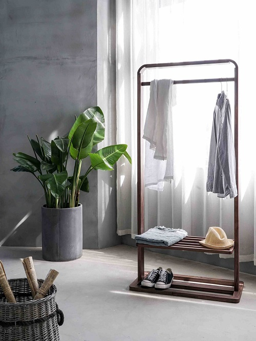
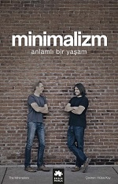

Bir yaşam stili olarak ortaya çıkan bu tarz çok eskilere dayanmaktadır ancak günümüzde popüler kültürün etkisiyle de tekrar gündeme gelmiştir.
Yaşam tarzı olarak minimalistliği yani sadeliği seçen insanlar için bu tarz ihtiyaç duyulmayan şeylerden kurtulmak ve zihni boşaltma yöntemi olarak tanımlanabilir.
Eğer her eşyam benim için değerlidir hiçbirini gözümden çıkaramam diyen insanlardansanız bu tarz sizi biraz korkutabilir. Ancak bu yaşam tarzını kabul eden insanların yorumlarından şunu çıkarabiliriz.İlk başta zor gibi gözüksede bazı şeyleri gözden çıkarmak eğer zihnimizde yer edinip bizi meşgul ediyorsa onu daha fazla yanımızda tutmamalıyız.
Bu tarz aslında sadece eşyalar üzerinde geçerliymiş gibi gözüksede aslında yaşamın her alanı, her anı ile ilgili bir durum. Yani etrafımızda bizi yoran durumlardan, insanlardan da uzaklaşmamızı sağlayan bir tarzdır. Aslında bu tarzı bizim yaşantımızda bulunan bir söylem ile de anlatabiliriz ”Az ile yetinmek”.
İhtiyaç dışı her şeye karşı bir stilde diyebiliriz.
Bu yaşam tarzı hayatın her anını kapsamaktadır. İnsanlar, düşünceler, Eşyalar, beslenme şekilleri gibi... Bu hayat tarzının her alanı için çeşitli kaynaklar bulunmaktadır.Kitaplar, belgeseller, söyleşiler...
Japon temizlik ve organizasyon uzmanı Marie Kondo’nun “Derle, Topla, Rahatla” adlı kitabı, diğer kitabımız ise iki yakın arkadaşın ilk önce kendi hayat tarzlarını kökten değiştirerek sonra etraflarınındaki insanlara bu tarzı anlatmaya çalışmalarını konu edinen“ Minimalizm-Anlamlı Bir Yaşam” kitabın yazarları ise Joshua Fields Millburn , Ryan Nicodemus.
theminimalists.com
turkisiminimalizm.com